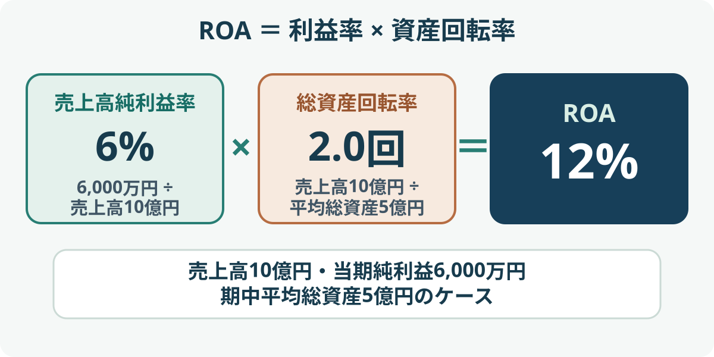

COMPANY ANALYSIS / FINANCIAL METRICS
ROAとは？総資産利益率の計算方法とROEとの違い
ROA（総資産利益率）は、会社が保有する資産全体を使って、どれだけ利益を生み出したかを見る指標です。株主のお金だけでなく、借入金などで調達した資金も含めて事業の効率を確認できるため、ROEと組み合わせると企業の収益構造を読み取りやすくなります。
1. ROAとは何か
ROAは「Return on Assets」の略で、日本語では総資産利益率と呼ばれます。会社の総資産に対して、どれだけの利益を生み出したかを割合で示します。総資産は、現金・預金、売掛金、棚卸資産、設備などの資産の合計で、負債と純資産によって調達された資金の運用先です。
ROEが株主に帰属する自己資本を分母にするのに対し、ROAは借入金などで調達した資金も含む総資産を分母にします。そのため、株主資本の大きさだけに左右されず、会社全体で資産をどれだけ効率よく使っているかを考える手掛かりになります。
| 指標 | 分母 | 主に見ること |
|---|---|---|
| ROA | 総資産 | 会社全体の資産を使って利益を生み出す効率 |
| ROE | 自己資本 | 株主資本を使って利益を生み出す効率 |
ROAは高いほど、同じ資産規模でより多くの利益を生み出している状態を示します。ただし、資産を持たないビジネスモデルが有利になりやすいなど業種差があるため、異なる業種のROAを単純に順位付けする指標ではありません。
2. ROAの計算方法
一般的な財務分析では、当期純利益を期首・期末の平均総資産で割る方法が使われます。
期中平均総資産は、期首総資産と期末総資産の平均です。
期中平均を使うのは、利益が1年間の活動によって生まれる一方、総資産は決算日時点の残高だからです。期末残高だけを使うと、期中の増資、借入、設備投資、資産売却などの変化が計算に十分反映されない場合があります。
ROAには利益の定義が複数ある
「ROA」という名前でも、分子に使う利益は必ずしも同じではありません。日本取引所グループの用語集でも、営業利益・経常利益・当期純利益などを使った総資産営業利益率、総資産経常利益率、総資産純利益率が区別されています。
| 種類 | 分子 | 読み取る内容 |
|---|---|---|
| 総資産営業利益率 | 営業利益 | 本業の営業活動で資産からどれだけ利益を得たか |
| 総資産経常利益率 | 経常利益 | 営業外損益も含めた経常的な収益力 |
| 総資産純利益率 | 当期純利益 | 税金や特別損益などを反映した最終利益に対する資産効率 |
本記事では、企業の最終的な利益と資産規模を対応させるため、当期純利益を使うROAを基本として説明します。営業利益や経常利益を使うデータサービス・資料と比較するときは、利益の種類が一致しているか確認してください。
3. 具体例でROAを計算する
ある会社の当期純利益が6,000万円、期首総資産が4億円、期末総資産が6億円だったとします。
| 項目 | 金額 |
|---|---|
| 当期純利益 | 6,000万円 |
| 期首総資産 | 4億円 |
| 期末総資産 | 6億円 |
| 期中平均総資産 | （4億円＋6億円）÷2＝5億円 |
| ROA | 6,000万円÷5億円×100＝12% |
この会社は、期中平均で5億円の資産を使い、6,000万円の当期純利益を生み出したため、ROAは12%です。これは「投資家が株式を買うと年12%のリターンを得られる」という意味ではありません。会社の会計上の利益を、会社が保有する資産規模と比べた経営・財務分析の指標です。
同じ利益でも資産規模が違えばROAは変わる
当期純利益がどちらも6,000万円のA社・B社を比べます。A社の期中平均総資産が5億円、B社が10億円なら、ROAは次のようになります。
| 項目 | A社 | B社 |
|---|---|---|
| 当期純利益 | 6,000万円 | 6,000万円 |
| 期中平均総資産 | 5億円 | 10億円 |
| ROA | 12% | 6% |
同じ利益を生み出すために、B社はA社の2倍の資産を必要としています。この条件だけを見れば、A社のほうが資産を効率よく使っているといえます。ただし、設備投資の直後でまだ売上が立ち上がっていない、成長のために先行投資をしているなど、資産が増えた理由も確認する必要があります。
4. 利益率と総資産回転率に分解する
ROAは、売上高純利益率と総資産回転率に分解できます。ROAが高い・低いという結果だけでなく、その理由を考えるために役立つ見方です。
- 売上高純利益率：当期純利益 ÷ 売上高。売上から最終的にどれだけ利益を残せたかを示します。
- 総資産回転率：売上高 ÷ 期中平均総資産。保有する資産を使って、どれだけ売上を生み出したかを示します。

先ほどの例で、売上高が10億円、当期純利益が6,000万円、期中平均総資産が5億円なら、売上高純利益率は6%、総資産回転率は2.0回です。
利益率が高い会社は、価格設定や付加価値、原価・販管費の管理などによって売上から利益を多く残しています。一方、総資産回転率が高い会社は、在庫・設備・売掛金などの資産を効率よく使い、資産規模に対して大きな売上を生み出しています。
たとえば小売業・卸売業では、利益率が低くても商品を速く販売し、資産を回転させることで収益を確保するビジネスがあります。反対に、高い付加価値を提供する企業では、資産回転率が比較的低くても利益率によってROAを確保する場合があります。どちらが優れているかは、業種や事業モデルを踏まえて判断します。
5. ROAとROEの違い
ROAとROEは、どちらも利益を資本・資産の規模と比べる指標ですが、分母が異なります。ROAは負債と自己資本の両方で構成される総資産、ROEは株主に帰属する自己資本を使います。
| 比較項目 | ROA | ROE |
|---|---|---|
| 日本語 | 総資産利益率 | 自己資本利益率 |
| 分母 | 期中平均総資産 | 期中平均自己資本 |
| 基本式（本記事の定義） | 当期純利益÷平均総資産 | 当期純利益÷平均自己資本 |
| 主な視点 | 会社全体の資産効率 | 株主資本の収益性 |
利益の種類と期間基準をそろえた場合、次の関係で考えられます。
後半の「平均総資産 ÷ 平均自己資本」は、財務レバレッジに相当します。自己資本に対して負債を多く使う会社では、この倍率が大きくなり、ROAが同じでもROEは高くなります。
例えば、平均総資産5億円、当期純利益6,000万円の会社ではROAは12%です。平均自己資本が3億円ならROEは20%、1億5,000万円ならROEは40%になります。後者のROEが高いのは、利益が増えたからではなく、自己資本に対する総資産の倍率が大きいことも理由です。
したがって、ROEが高い企業を見つけたら、ROAや自己資本比率、借入金、利息負担も確認します。ROEの詳しい分解方法はROE（自己資本利益率）の解説も参照してください。
6. 企業比較での使い方
ROAは、同業他社との比較や、同じ企業の複数年の推移を見るときに使います。比較するときは、少なくとも次の点をそろえましょう。
| 確認すること | 見る理由 |
|---|---|
| 同じ業種・事業モデル | 設備・在庫・店舗など必要な資産の量が業種で異なるため |
| 同じ利益の定義 | 営業利益・経常利益・当期純利益では分子の意味が異なるため |
| 同じ資産の基準 | 期末総資産か期中平均総資産かで数値が変わるため |
| 同じ会計期間・連結範囲 | 対象期間や連結・単体の違いによるズレを避けるため |
| 複数年の推移 | 一時的な利益や投資直後の資産増加を見分けるため |
ROAの目安を一律に「何%以上なら優良」と決めることはできません。業種ごとの資産構成や利益率が異なるため、同業他社・業界統計・自社の過去推移を組み合わせて判断します。
参考として、財務省の「法人企業統計からみえる企業の財務指標」に掲載された2024年度の総資本営業利益率は、全産業・全規模で3.8%、製造業で4.3%、非製造業で3.6%でした。ただし、これは営業利益を使った指標であり、本記事で基本式に採用した当期純利益ベースのROAとは分子が異なります。数値をそのまま同じ基準のROAとして比較しないでください。
7. ROAを見るときの注意点
① 資産を持たない企業が高く見えやすい
自社で工場や店舗などを多く保有する企業と、設備を外部委託する企業では、貸借対照表に計上される資産の量が異なります。事業の実態が似ていても、保有形態の違いでROAに差が出る場合があります。
② 成長投資の直後は一時的に低下することがある
工場・店舗・物流設備などを先に整備すると、売上や利益が十分に増える前に総資産が大きくなり、ROAが低下する場合があります。投資の目的、稼働率、売上への貢献が現れるまでの期間を確認しましょう。
③ 資産の帳簿価額と経済価値は一致しない
古い設備は減価償却が進み、帳簿上の価額が小さくなっていることがあります。その結果、同じ利益を生んでいても、設備が新しい会社よりROAが高く見える場合があります。資産の老朽化や更新投資の必要性も確認が必要です。
④ 一時的な利益で数値が上がることがある
固定資産や有価証券の売却益などによって当期純利益が一時的に増えると、ROAも上昇します。継続的な本業の収益力を見る場合は、営業利益や経常利益を使った指標も確認し、特別損益の影響を分けて考えます。
⑤ 負債のリスクを単独では測れない
ROAが高くても、借入金の返済負担や金利上昇リスクが小さいとは限りません。自己資本比率、有利子負債、利息負担、営業キャッシュフローなどを合わせて確認します。
8. 決算資料で確認する手順
- 損益計算書から利益を確認：当期純利益を確認し、特別利益・特別損失など一時的な要因がないか見ます。
- 貸借対照表から総資産を確認：前期末と当期末の総資産を取得し、平均値を計算します。
- ROAを計算：当期純利益を期中平均総資産で割り、100を掛けます。
- 利益率と資産回転率に分解：売上高純利益率と総資産回転率のどちらが変化したかを確認します。
- ROE・財務指標と組み合わせる：ROE、自己資本比率、負債、キャッシュフローを見て、資本構成と資産効率の両面を確認します。
- 同業他社・過去数年と比較：同じ定義・期間・連結範囲の数値を使い、改善・悪化の背景を決算説明資料で調べます。
まとめ
- ROAは、会社の総資産に対してどれだけ利益を生み出したかを見る指標。
- 基本式は「当期純利益 ÷ 期中平均総資産 × 100」。利益の定義によって別のROAがある。
- 売上高純利益率と総資産回転率に分解すると、収益性の背景を読み取れる。
- ROEは自己資本、ROAは総資産を分母にするため、負債を含む資産全体の効率を確認するにはROAが役立つ。
- 同業・複数年・同じ計算基準で比較し、ROAだけで企業の優劣を決めない。
ROAは企業の資産効率を把握する入口です。利益率・資産回転率・財務レバレッジを分けて確認し、事業の収益力と財務の安全性を組み合わせて企業を分析しましょう。
参考資料
- 日本取引所グループ「総資産利益率」 — ROAの定義と、利益の種類による指標の違い。
- 経済産業省「『攻めの経営』を促す役員報酬 ～企業の持続的成長のためのインセンティブプラン導入の手引～」 — ROA・ROEの算定方法の例。
- 財務省 財務総合政策研究所「財務指標の例①：総資本営業利益率」 — ROAの利益の種類による違い、総資本営業利益率の分解と2024年度の統計値。
- 金融庁「業種別支援の着眼点」 — ROAの分解と業種特性を踏まえた分析の考え方。